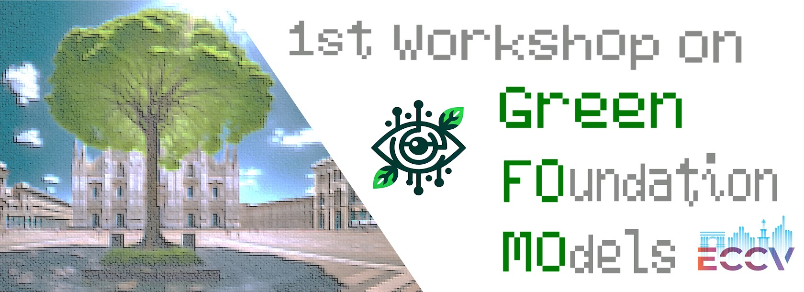

We encourage two types of submissions:
Full-length papers with proceedings.
The work is limited to 14 pages (excluding references) and should follow ECCV Submission policies.
Selection for inclusion will be determined by the paper's relevance,
significance, novelty of findings, technical quality, and clarity of
presentation. Accepted papers will be featured in the ECCV 2024 workshop proceedings.
Extended abstracts (non-archived).
We encourage submission of work in progress and work that has been previously
published on relevant topics of the workshop as extended abstracts. The page
limit is 4 pages (excluding references). These submissions
will not be indexed or published in the proceedings. For authors who want to
submit their accepted work at this workshop to a different journal or conference,
please check their double submission policy.
Papers must adhere to the ECCV 2024 official template (by cloning the
Overleaf Project), as per the main conference author guidelines.
Each submission will undergo review by a minimum of two reviewers under a double-blind policy.
All the papers should be submitted using
CMT website .
Relevant topics of interest to the workshop include, but are not limited to:
Training-free methods
Parameter efficient fine-tuning
Model compression and pruning
Token reduction
Light-weight models
Personalization of vision & language models
Uni-(multi-)modal reasoning
Continual/transfer learning
Efficient generative models
Novel applications for sustainability and biodiversity
Camera Ready Submission: Corresponding authors will receive the link to submit the camera ready files directly to Springer. We'll let you know as soon as those links have been sent and we'll also communicate the new deadline for submitting the camera ready.
Poster size: the posters should be portrait (vertical), with a maximum size of 90x180 cm.